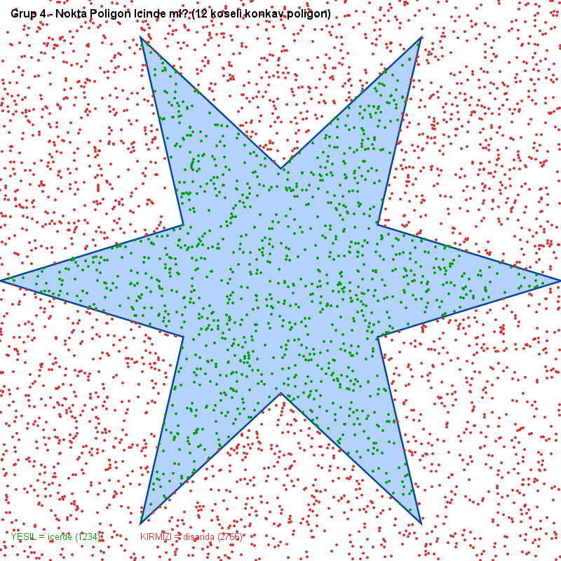

![Bursa Teknik Üniversitesi]()
Olmadığının Paralel Tespiti
Özet
Ne yaptık? Konkav (içbükey) ya da konveks (dışbükey) bir poligonun(x, y) köşe ikilileriyle verildiği durumda, çok sayıda test noktasının bu poligonun
içinde mi yoksa dışında mı olduğunu otomatik olarak belirleyen bir nokta-içerme testi
sistemi geliştirdik. Sistem aynı problemi hem sıralı hem de çok thread'li paralel
çalıştırır; her nokta için sonucu "içeride/dışarıda" olarak üretir ve iki yöntemin sürelerini
ölçerek hızlanma katsayısını (speedup) raporlar.Neler kullandık? Çekirdek yöntem olarak Ray Casting (ışın gönderme) algoritması; paralelleştirme için Java thread havuzu (
java.util.concurrent — ExecutorService, Callable,
Future) kullanılmıştır. Ölçümler 8 mantıksal çekirdekli bir makinede, sabit tohumlu
rastgele noktalarla ve ısınma turu sonrası 5 tekrarın ortalaması alınarak yapılmıştır. Problem
veri-paralel yapıda olduğundan, paralelleştirme doğruluğu bozmadan
5 milyon nokta için ~3,3 kat hızlanma sağlamış; doğruluk her ölçümde
sıralı çözümle karşılaştırılarak teyit edilmiştir.Anahtar Kelimeler: Paralel Programlama, Ray Casting, Thread Havuzu (ExecutorService), Veri Paralelliği, Hızlanma (Speedup) | GitHub: https://github.com/MustafaCanErsoy/point-in-polygon-parallel
1. Problem Tanımı ve Çalışma Prensibi
Bir poligon, sıralı (x, y) köşe noktalarıyla tanımlanır. Bu projedeki amaç,
verilen bir noktanın bu poligonun içinde mi yoksa dışında mı olduğunu
belirlemektir. Bilgisayar grafiği, CBS ve çarpışma testi gibi alanlarda kullanılan bu
hesaplama, çok sayıda noktanın aynı poligona karşı test edilmesi gerektiğinde maliyetli hâle
gelir ve bu nedenle paralelleştirmeye uygun bir adaydır.
1.1 Ray Casting (Işın Gönderme) Yöntemi
Kullanılan yöntemde, test noktasından bir yöne (+x yönü) sonsuz bir ışın gönderilir ve bu ışının poligon kenarlarını kaç kez kestiği sayılır. Kesişim sayısı tek ise nokta içeride, çift ise dışarıdadır. Bir kenar (köşe i → köşe j) için kesişim koşulu şöyledir:
kesişimX = (polyX[j]−polyX[i])·(py−polyY[i]) / (polyY[j]−polyY[i]) + polyX[i]
Yöntemin en önemli avantajı, hem konveks hem de konkav (içbükey) poligonlarda doğru çalışmasıdır; bu nedenle testlerde bilinçli olarak 12 köşeli konkav (yıldız biçimli) bir poligon seçilmiştir.
Paralelleştirmeye uygunluk: Her test noktası diğerlerinden bağımsız değerlendirildiğinden problem "utanç verici derecede paralel (embarrassingly parallel)" sınıfındadır; noktaları thread'lere bölmek için kilit veya thread'ler arası iletişim gerekmez.
2. Kullanılan Fonksiyonlar
| Fonksiyon | Görevi |
|---|---|
nokativarMi(...) | Çekirdek algoritma: tek bir noktanın poligon içinde olup olmadığını Ray Casting ile döndürür. |
sirali(...) | Sıralı çözüm: tüm noktaları tek thread ile test eder (karşılaştırma için temel/baseline süre). |
paralel(..., T) | Paralel çözüm: noktaları T parçaya böler, her parçayı ExecutorService ile ayrı bir Callable'da işler, Future ile toplar. |
yildizPoligon(...) | Test için konkav (yıldız) poligon üretir. |
main(...) | Farklı parametreler için süre ölçer, speedup hesaplar; konsol tablosu ve CSV üretir. |
Çekirdek nokativarMi fonksiyonunun tam kaynak kodu ve diğer tüm fonksiyonlar,
proje deposundaki NoktaPoligonIcinde.java dosyasında yer almaktadır.
3. Paralel Çözümün Açıklaması
Paralel çözümde veri paralelliği (data parallelism) uygulanmıştır. Çalışma üç adımdan oluşur:
- Bölme (Partition): N nokta, T thread için yaklaşık eşit T parçaya bölünür (her parça
[bas, son)aralığı). - Dağıtım (Map):
ExecutorService(sabit boyutlu thread havuzu) ile her parça birCallable<Integer>görevine verilir. Her görev yalnızca kendi aralığındaki noktaları sayar ve yerel bir sayaç tutar; paylaşılan değişkene yazmadığı için kilit gerekmez. - Toplama (Reduce): Tüm thread'ler bitince kısmi sayımlar
Future.get()ile toplanarak nihai "içeride nokta sayısı" elde edilir.
Paylaşılan yazılabilir durum bulunmadığından veri yarışı (race condition) oluşmaz; poligon dizileri yalnızca okunur ve iş yükü thread'lere dengeli dağıtılır (her thread ≈ N/T nokta). Doğruluk her ölçümde sıralı çözümle karşılaştırılarak teyit edilmiştir.
4. Deneysel Sonuçlar ve Hızlanma Katsayısı
Test ortamı: Windows 11, 8 mantıksal çekirdekli CPU, Java 1.8. Her ölçüm 5 tekrarın ortalamasıdır (ısınma turu sonrası, sabit tohumla — tekrar edilebilirlik için). Speedup = Sıralı süre / Paralel süre.
4.1 Nokta Sayısının Etkisi (8 thread sabit)
| Nokta Sayısı | Sıralı (ms) | Paralel (ms) | Speedup | İçeride |
|---|---|---|---|---|
| 100 | 0,040 | 0,835 | 0,05 | 37 |
| 10.000 | 0,983 | 1,099 | 0,90 | 2.975 |
| 100.000 | 4,226 | 2,460 | 1,72 | 29.936 |
| 1.000.000 | 41,741 | 13,547 | 3,08 | 300.251 |
| 5.000.000 | 223,624 | 67,807 | 3,30 | 1.501.826 |
Bulgu: Küçük N'de (≤10.000) speedup < 1; thread havuzu kurma/toplama gibi sabit ek maliyetler asıl işten pahalı olduğu için paralel çözüm yavaştır. Büyük N'de (≥100.000) iş yükü bu maliyetleri aşar; speedup 100 nokta için 0,05 iken 5 milyon nokta için 3,30'a (~3,3 kat) ulaşır.
4.2 Thread Sayısının Etkisi (N = 5.000.000 sabit)
| Thread Sayısı | Paralel (ms) | Speedup | Verimlilik (%) |
|---|---|---|---|
| 1 | 220,083 | 0,99 | 98,8 |
| 2 | 174,794 | 1,24 | 62,2 |
| 4 | 130,596 | 1,67 | 41,6 |
| 8 | 84,739 | 2,57 | 32,1 |
Verimlilik (%) = Speedup / Thread sayısı (ideal = %100). Referans sıralı süre: 217,4 ms.
4.3 Çalışma Örneği ve Görsel Doğrulama
Program, her satırda sıralı ve paralel çözümün buldukları "içeride nokta sayısını" karşılaştırır ve tüm ölçümlerde aynı sonucu üretir; böylece paralelleştirmenin doğruluğu bozmadığı doğrulanır. Tek nokta sorgusunda örneğin (500, 500) noktası için İÇERİDE, (10, 10) noktası için DIŞARIDA yanıtı alınır. Algoritmanın konkav poligonda doğru çalıştığı görsel olarak da kanıtlanmıştır (Şekil 1): 12 köşeli konkav yıldız poligon ve 4000 rastgele nokta üzerinde, içeride kalanlar yeşil, dışarıda kalanlar kırmızı gösterilmiştir.

5. Sonuç
Nokta–poligon içerme problemi Ray Casting algoritmasıyla çözülmüş ve Java thread havuzu ile paralelleştirilmiştir. Problem veri-paralel olduğundan paralelleştirme doğruluğu bozmadan önemli hızlanma sağlamış; hızlanma problem boyutu ve thread sayısı arttıkça yükselmiş, paralel verimlilik ise ek maliyetler ve donanım sınırları nedeniyle azalmıştır. Küçük veride ek maliyet kazançtan büyük olduğundan paralel çözüm ancak belirli bir eşiğin (≈100.000 nokta) üzerinde avantajlıdır. Sonuç olarak paralelleştirme bedava değildir; kazanç ancak iş yükü, ek maliyeti aştığında ortaya çıkar.
Bir Noktanın Poligon İçinde Olup Olmadığının Paralel Tespiti | Mustafa Can Ersoy · 20360859046 | Bursa Teknik Üniversitesi | Haziran 2026